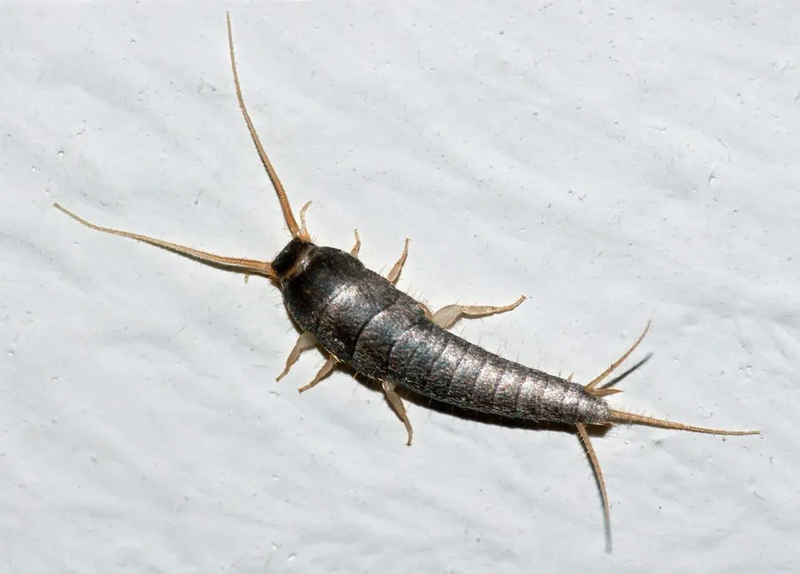

昆虫 · 动物界
衣鱼 Lepisma saccharinum

室内常见的原始无翅昆虫，体表覆盖银色鳞片，尾端有三根长须，夜间活动，取食纸张、衣物中的淀粉类物质。
- 分类
- 门节肢动物门纲昆虫纲目衣鱼目科衣鱼科属衣鱼属
- 栖息环境
- 人类居所的阴暗潮湿处，如书架、衣柜、墙缝与地下室
- 地理分布
- 全球分布，室内常见，野外见于树皮和落叶层
- 保护级别
- 暂无评估
物种志
衣鱼成虫体长约 1 cm 左右，身体细长扁平，呈银灰色。它的体表覆盖细密的鳞片，触角长而细，腹部末端有三根长须，其中两根尾须和一根中尾丝；没有翅膀，靠腹部和足的运动快速爬行。
衣鱼分布遍及全球，生活在人类居所的阴暗潮湿处，如书架、衣柜、墙缝和地下室，野外也见于树皮、落叶层。它是杂食性昆虫，取食纸张、书皮、衣物纤维、淀粉、糖类和毛发碎屑，因此是书籍和衣物的害虫。衣鱼多在夜间活动，白天隐蔽，行动敏捷；雌虫将卵产在缝隙中，若虫孵化后经多次蜕皮逐渐长大，成虫寿命可达数年。衣鱼是现存最原始的无翅昆虫之一，对研究昆虫演化具有意义。
形态与习性
- 食性纸张、衣物纤维、淀粉、糖类与毛发碎屑
- 体长成虫约 1 cm
- 外形体表覆银色鳞片，尾端有三根长须
- 活动节律夜间活动，白天隐蔽
- 繁殖雌虫将卵产在缝隙中，若虫多次蜕皮
- 寿命成虫寿命可达数年
趣味知识
- 衣鱼没有翅膀，尾端有三根长须，是原始的无翅昆虫。
- 它取食纸张和衣物中的淀粉，因此是书籍害虫。
- 衣鱼行动敏捷，夜间活动，白天躲在缝隙中。
- 衣鱼体表的银色鳞片让它看起来像一条小鱼。